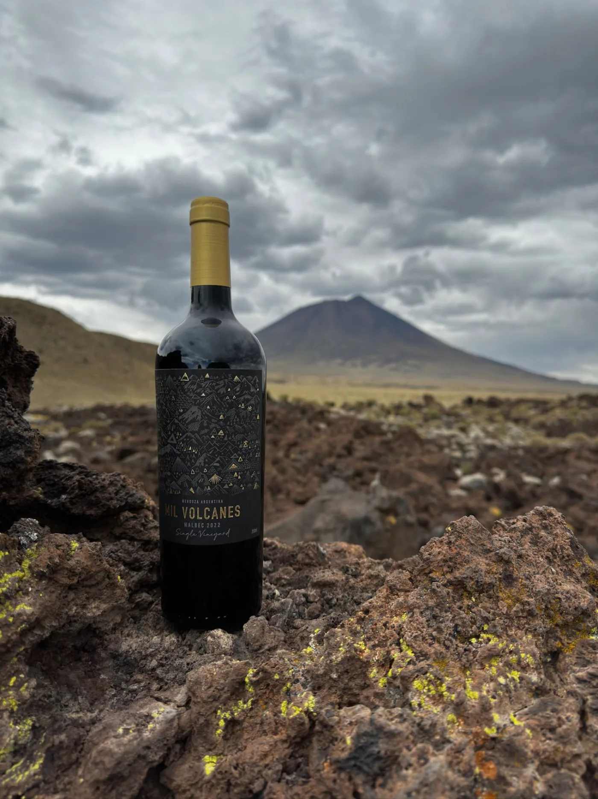
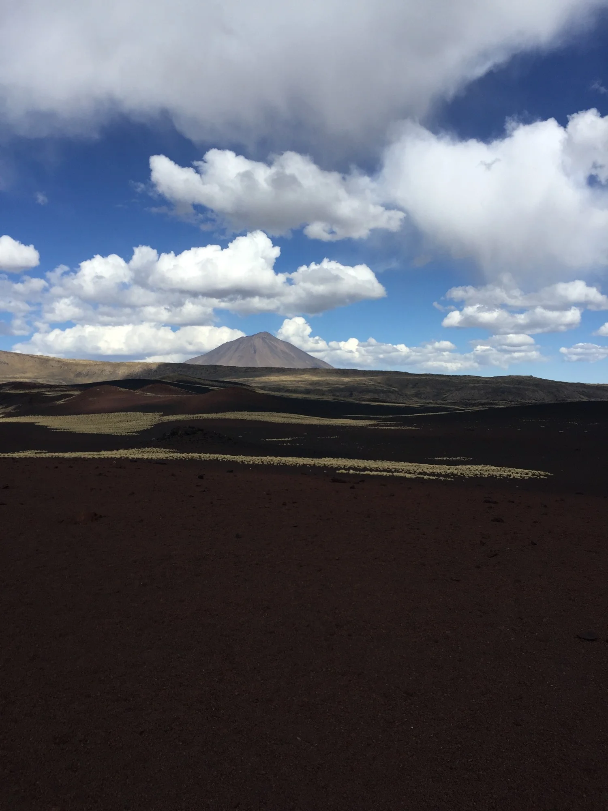

Volcán Herradura
Un cráter abierto en forma de herradura, testigo de una antigua explosión lateral.
Reserva Natural
El desierto de ochocientos volcanes que le dio nombre y espíritu a cada una de nuestras etiquetas.
Malargüe, sur de Mendoza
Casi mil conos volcánicos moldearon el suelo donde hoy crecen nuestros viñedos.
Otros hitos de la reserva
Un cráter abierto en forma de herradura, testigo de una antigua explosión lateral.

Sus escorias teñidas de óxido le dan nombre: un cono rojizo entre el negro de la lava.

Mantos de lava que se extienden hasta el horizonte, como otro planeta.

Una falla abierta en la roca donde el agua corre varios metros más abajo.
Payún Liso
Su cono simétrico y perfecto corona la Payunia: la silueta que inspiró la etiqueta de cada botella Mil Volcanes.

Pampas Negras
Mantos de lava negra se extienden hasta el horizonte, como otro planeta. Cráteres teñidos de rojo y violeta por los minerales volcánicos rodean una estepa habitada por guanacos salvajes.
Ese mismo suelo volcánico —duro, mineral, generoso— es el que hoy sostiene nuestros viñedos de altura en el Valle de Uco y Luján de Cuyo.
Ver la colección de vinos →Fauna & estepa
La mayor concentración de guanacos salvajes de Mendoza recorre esta estepa, donde hasta el pasto más simple —el coirón— aprende a crecer en piedra volcánica.


Energía pura de la naturaleza
Descubrí los vinos que nacen a su sombra.